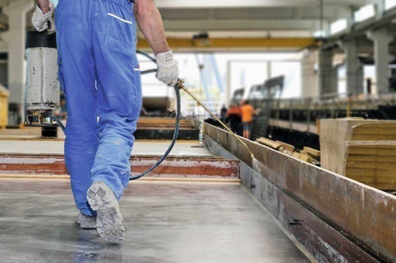
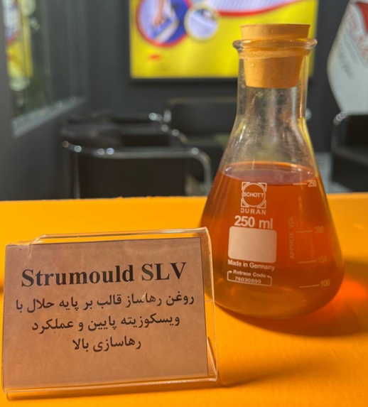

روغن قالب بتن، یک راهنمایی کامل در مورد آن
روغن قالب بتن، یک راهنمایی کامل در مورد آن
روغن قالب چیست؟
روغن قالب بتن نوعی ماده کمکی پردازش است که عمدتاً برای قالب برداری آسان تر با کمترین آسیب به سطح بتن و قالب استفاده می شود. بتن برای ما نا آشنا نیست و ما اغلب در زندگی روزمره محصولات بتنی را می بینیم، در فرآیند ساخت و سازهای بتنی شاهد انواع قالب ها شامل فلز، چوب، پلاستیک و غیره خواهیم بود. به منظور طولانی تر شدن عمر قالب، تمیز کردن قالب بهترین روش است و کارگران راحت تر و ایمن تر کار می کنند. بنابراین پاک کردن لایه نازک از روغن قالب بتن روی قالب که از بتن ریزی قبلی به جا مانده است، می تواند به طور موثری از قالب محافظت و عملکرد روغن قالب بعدی را حفظ و صرفه جویی در کار ایجاد می کند.

عامل رهاسازی بتن (روغن قالب بتن) از چه چیزی ساخته شده است؟
به طور کلی، روغن پایه آلی و معدنی جدید برای ساخت روغن قالب بتن بر پایه حلال و یا آب استفاده می شود. این نوع روغن رهاسازی از طریق لینک های مختلف کنترل و نظارت می شود که تضمین های خاصی برای حفاظت از محیط زیست و سلامت کارگران دارد. عامل رهاسازی بتن مبتنی بر روغن توسط مواد پلیمری، عامل جداسازی فیلم، سورفکتانت و سایر فناوری های سنتز حرفه ای تولید می شود. از طریق این سنتز ویژه میکروامولسیون روغن قالبی با مزایای قالب برداری سریع و جداسازی آسان با ایجاد سطح بتن مناسب تولید می گردد.
انواع رها ساز بتن
به طور عمده به عوامل رهاساز قالب بتن پر پایه حلال و عوامل رهاساز قالب بتن مبتنی بر آب تقسیم می شوند. روغن قالب بتن پایه حلال واکنشی دارای مزایای عملکرد آزادسازی بسیار عالی، حفظ کیفیت در دمای بالای کیورینگ بتن، غیر سمی، استفاده آسان و سریع است. روغن قالب بتن مبتنی بر پایه آب دارای مزایای حفاظت از محیط زیست، بوی کم، غیر سمی ، آسان تر تمیز شدن از سطح قالب بتن، محافظت از قالب، طولانی کردن عمر قالب می باشد.
کاربرد روغن قالب بتن
روغن رهاساز بتن بر پایه روغنی پایه حلال برای قالبهای فولادی، قالب چوب، قالب لاستیکی بامبو پلهای راهآهن، پلهای بزرگراه، تونلهای مترو، سدها و سایر پروژههای بتنی مناسب است. برای رهاسازی قالب در قطعات پیش ساخته، قالب پل، قالب ستون، قالب پایه، سطح قالب فولادی بزرگ با عملکرد قالب بردازی با کیفیت بالا، یک عامل قالب برداری ویژه با کیفیت بالا است.
عامل رهاسازی بتن پایه آب برای بتن اکسپوز، کارخانه تیر بزرگ، بزرگراه، روگذر، کارخانه لوله سیمان مصرف میگردد. قالب فولادی، قالب آلیاژ آلومینیوم، قالب چوب، قالب چسب بامبو و قالب رزین مناسب است.
چگونه از عامل رهاسازی بتن استفاده کنیم؟
ابتدا باید قالب را تمیز کرد و اثر منفی قالب استفاده شده را کاهش داد. روغن قالب بتن را می توان به طور مستقیم یا رقیق شده با حلال یا آب بسته به نوع روغن قالب استفاده کرد. برای اولین استفاده از قالب، دو یا سه بار روغن رهاساز قالب را به طور یکنواخت روی قالب اسپری کنید. بتن ریزی باید پس از خشک شدن عامل رهاسازی به طور یکنواخت روی سطح قالب شروع گردد. استفاده از طریق اسپری یا پوشش با قلم مویا غلتک هر دو قابل اجرا می باشد. پس از هر قالب برداری مجدد یک لایه جدید از ماده رهاسازی بمالید.

نکاتی در مورد انتخاب بهترین عامل رهاسازی بتن
انتخاب عامل رهاسازی بتن عمدتاً عوامل زیر را در نظر می گیرد:
1.قالب برداری آسان؛ 2.دوام خوب؛ 3. اثر سطحی خوب. 4. عدم پدیده انتقال. 5. بوی کم; 6. خاصیت پوشش خوب. 7. قابلیت اجرای خوب.
روغن قالب بتن تولیدی شرکت استرامیکس برای طیف گسترده ای از انواع قالب مناسب است.
محصولات مرتبط استرامیکس:
Strumould SLV: روغن قالب بتن بر پایه حلال با ویسکوزیته پایین و عملکرد رهاسازی بالا (با عملکرد واکنشی)
Strumould SHV: روغن قالب بتن بر پایه حلال با ویسکوزیته بالا (با عملکرد واکنشی)
Strumould WRA: روغن قالب بتن بر پایه آب با عملکرد رهاسازی بالا (با عملکرد واکنشی)
Struclean CM11: حلال بتن، دوغاب سیمانی و ملات سیمانی از سطوح
بهترین مطالب هر ما
ارسال میشه به صندوق پستی شما!
این بالا کلیک کن و ایمیلت رو بنویس
ثبت